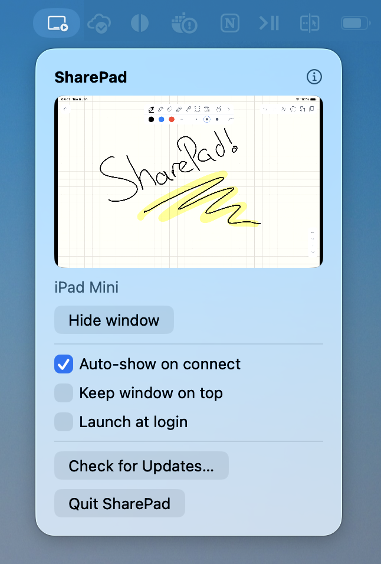

On the left, the SharePad window. On the right, that same window shared into Google Meet at full size.
How it works
Ready the moment you plug in.
SharePad lives in your menu bar and finds your iPad as soon as it connects to your Mac.
1
Plug in the iPad
Connect it over USB. There’s nothing to install on the iPad.
2
The window appears
A clean window opens automatically, matched to your iPad’s shape so nothing looks squished. Show or hide it whenever you like.
3
Share it in the call
Pick it from the “Share window” list in Zoom, Meet or Teams, open your favourite app, and you’re ready to go.

The whole app lives in your menu bar: a live preview of exactly what you’re sharing, with show/hide and keep-on-top controls a click away.
Privacy
Nothing leaves your Mac.
SharePad just shows the iPad in a window on your machine. No account, no sign-in, no in-app tracking or analytics. The only time it reaches the internet is an automatic check for a new version, never to send your data or anything about what you share.
Before you download
How it ships, honestly.
SharePad isn’t on the Mac App Store, so you download it straight from here.
Try everything free for a week, no card and no account. After that, £6.99 keeps it yours for good.
£6.99, paid once. No subscription and no account, just a one-off payment, with automatic updates for life.
Every build is signed and notarised by Apple, so it opens with a normal double-click.
It runs outside Apple’s sandbox, because that’s the only way macOS will treat a plugged-in iPad as a camera. That’s also why it can’t be on the App Store.
How much does SharePad cost, and are updates included?
SharePad is £6.99, a one-time payment, not a subscription. That includes automatic updates for life, so every future version is free once you've bought it. Prefer to build it yourself? The full source is on GitHub under the GPLv3, free of charge.
What happens after the trial?
The app keeps working; sharing just pauses now and then until you add your licence. Nothing is removed, and a licence clears it straight away.
How do I share my iPad screen on Zoom, Google Meet or Teams?
Plug your iPad into your Mac over USB and SharePad opens a clean window showing its screen. In your call, choose “Share window” and pick SharePad from the list, the same way you’d share any app. There’s no mid-call setup, and it works in Zoom, Google Meet and Microsoft Teams.
Do I need to install anything on the iPad?
No. There’s nothing to install on the iPad and no app to open, just connect it to your Mac over USB. Everything runs on the Mac side.
Is SharePad a virtual camera?
No. A virtual camera shows up as a small webcam tile in a call. SharePad gives you a proper shared window at full size, which is what you want for live drawing and whiteboarding.
Does it work with Apple Pencil and drawing apps?
Yes. Use whatever drawing, writing or notes app you like on the iPad, SharePad simply shows the iPad’s screen, so your Apple Pencil strokes appear live in the call as you make them.
What do I need to run SharePad?
A Mac running macOS 14 (Sonoma) or later, and a USB cable to connect your iPad. That’s it.
Why isn’t SharePad on the Mac App Store?
macOS only treats a plugged-in iPad as a camera for apps that run outside Apple’s sandbox, and App Store apps must be sandboxed. SharePad is still signed and notarised by Apple, so it opens with a normal double-click. You just download it directly rather than from the store.
Which drawing or notes apps does it work with?
Any of them. SharePad shows your iPad’s whole screen, so you can use Procreate, GoodNotes, Freeform, Notability, Apple Notes, whatever you already draw or write in. There’s nothing to integrate.
Do I need a cable, or does it work wirelessly?
You connect the iPad to your Mac with a USB cable. SharePad uses the same wired connection macOS already exposes for a plugged-in iPad, the one QuickTime uses, so there’s no wireless pairing or network involved.
Is there any lag?
It’s a live feed rendered straight to your screen on the GPU, using the same capture path QuickTime and OBS use, so it stays responsive for drawing and writing.
The shared window is black, what can I do?
Two usual causes: the iPad is locked (a locked iPad shows black, so unlock it), or you haven’t tapped “Trust This Computer” on the iPad yet. Also, browser-based Google Meet and Teams only transmit a window that’s actually visible. If it’s hidden behind other windows the share goes blank, so switch on “Keep window on top” in the popover.
Does it share the iPad’s sound too?
No. SharePad is video only by design. It shows the iPad’s screen, not its audio, so your call’s own microphone handles the talking.
Will my iPad notifications show up in the share?
SharePad mirrors your whole iPad screen, so anything on the iPad, including notification banners, is visible to the call. Turn on a Focus or Do Not Disturb on the iPad before you share to keep things tidy.
Is my data private?
Yes. SharePad just shows the iPad in a window on your Mac. There’s no account, no sign-in, and no tracking or analytics in the app. The only network request it makes is an automatic check for a new version. It never sends your data or anything about what you share.